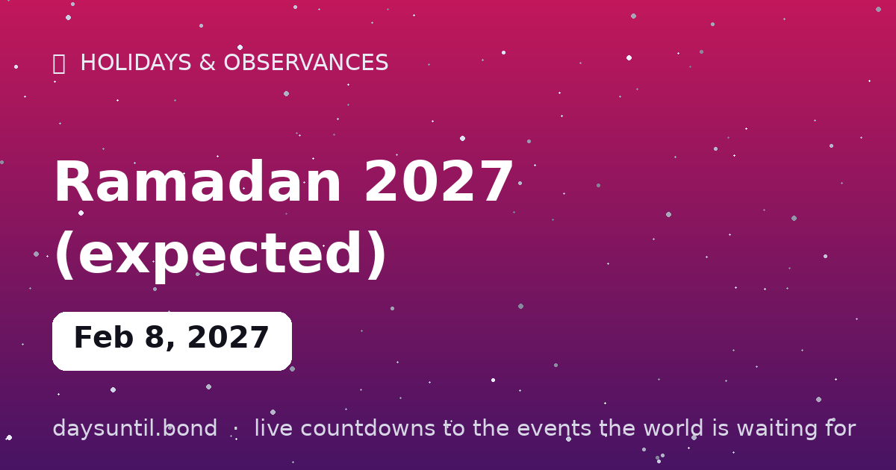

How Many Days Until Ramadan 2027 (expected)?
Ramadan 2027 (expected) falls on Monday, February 8, 2027.
As of October 24, 2026: 107 days to go — 15 weeks and 2 days, 76 weekdays (31 weekend days), about 2,568 hours.

Quick facts
| Date | Monday, February 8, 2027 |
|---|---|
| Category | Cultural observance |
About Ramadan 2027 (expected)
Ramadan 2027 (expected) falls on Monday, February 8, 2027. The month of fasting, prayer and community for the world's ~2 billion Muslims — from dawn to sunset without food or water, broken daily with the iftar meal. Dates follow the lunar calendar and moon sighting, so the start may shift by a day.
The live counter above ticks down to the day in your time zone.
Why the date is marked 'expected'
Ramadan is the ninth month of the Islamic lunar calendar, which is eleven days shorter than the solar year. That single fact explains everything people find confusing about it: the month moves about ten or eleven days earlier every year, cycling through every season over a 33-year loop. In 2026 it fell in the deep northern winter; by the mid-2030s it will fall in long summer daylight hours, which changes the length of the fast considerably at high latitudes.
The start also depends on the sighting of the crescent moon, which is why the date printed here is marked expected. Countries differ on method: some follow a Saudi announcement, some require a verified local sighting, and some — Turkey and Malaysia among them — use astronomical calculation to fix the date years in advance. In practice that means Ramadan 2027 is expected to begin on or around Monday, February 8, 2027, with a day's variation by country.
How long does Ramadan last?
Either 29 or 30 days, decided by the next crescent sighting. Each day runs from suhoor, the pre-dawn meal, to iftar, the meal that breaks the fast at sunset — which in February 2027 arrives at a comparatively early hour in the northern hemisphere, making this a shorter and easier fast than the summer years of the same cycle.
The last ten nights carry particular weight: Laylat al-Qadr, the Night of Decree, falls on one of the odd-numbered nights in that stretch and is described in the Quran as better than a thousand months. The month closes with Eid al-Fitr, the three-day festival that follows the new crescent — in 2027, on or around March 9 or 10.
What the month involves
Fasting from dawn to sunset is the most visible practice, but it is one of five pillars rather than the whole of the month. The fast is paired with increased prayer — including Taraweeh, the long nightly prayers held at the mosque — with reading the Quran through over the month, and with zakat al-fitr, a small charitable giving owed before the Eid prayer so that the poorest can join the celebration.
Children, the ill, travellers, pregnant and nursing women, and the elderly are exempt, as is anyone for whom fasting would cause harm. Missed days are made up later in the year.
Expected Ramadan start dates
| Year | Expected start | Length | Eid al-Fitr (expected) |
|---|---|---|---|
| 2026 | February 17 | 29–30 days | March 19 |
| 2027 | February 8 | 29–30 days | March 9–10 |
| 2028 | January 28 | 29–30 days | February 27 |
| 2029 | January 16 | 29–30 days | February 15 |
| 2030 | January 6 | 29–30 days | January 5 |
How the fast differs by latitude
A February Ramadan is a comparatively short fast in the northern hemisphere. In London the daylight window in February 2027 runs roughly from before 6am to just after 5pm — around eleven hours. In Mecca it is close to twelve. The difference is manageable.
The difficulty arrives when the lunar cycle puts Ramadan in high summer at high latitudes, where the fast can run beyond twenty hours and, above the Arctic Circle, where the sun may not set at all. Muslim communities in those regions generally follow one of three approaches: the timetable of Mecca, the timetable of the nearest country with a distinguishable night, or a fixed maximum length agreed by their local religious authority. All three are recognised positions rather than innovations — the lunar cycle guarantees that every Muslim community meets the long-fast case eventually.
Ramadan at work and at school
Most of the practical friction is logistical rather than religious. Fasting affects sleep patterns, because suhoor precedes dawn and Taraweeh prayers follow iftar — so a shifted schedule is the common request, not reduced hours. Several countries with large Muslim populations shorten the working day during the month by an hour or two, and schools in the UK, France, Canada and the US commonly adjust exam timetables and sports fixtures.
For colleagues and managers, the useful defaults are simple: do not schedule catered meetings or team lunches where the fasting person has to sit and decline, avoid assuming reduced capacity, and know that the last ten days and the Eid dates are the moments when flexibility matters most.
What to say during Ramadan
The standard greetings are Ramadan Mubarak ('blessed Ramadan') and Ramadan Kareem ('generous Ramadan'), and either is appropriate throughout the month. The customary reply to Ramadan Mubarak is Ramadan Mubarak in return, or Allahu akram. At the breaking of the fast, the phrase used is often the one the Prophet is reported to have used: the fast is opened with dates and water, and the day ends with iftar shared rather than eaten alone.
For Eid, the greeting is Eid Mubarak, and the traditional fuller form is Taqabbalallâhu minnâ wa minkum — 'may God accept from us and from you'. None of this requires fluency, and a sincere attempt at the greeting is received as exactly that.
What happens at iftar
Iftar is the meal that breaks the fast at sunset, and it is the social centre of the month. Traditionally it opens with dates and water, following the practice of the Prophet, before the main meal — and in most cultures it is eaten with family, neighbours and anyone who turns up, which is why mosques and community centres run free communal iftars throughout the month.
Regional variations are considerable: harees and thareed in the Gulf, harira soup in Morocco, kolek and kurma in Indonesia, samosa and pakora across South Asia. The other feature is scale — Ramadan is the one month of the year when household food consumption rises rather than falls, despite the fast.